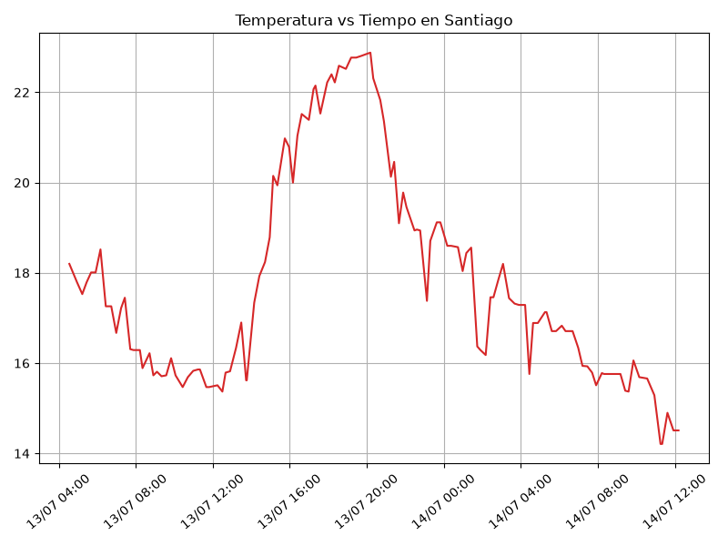
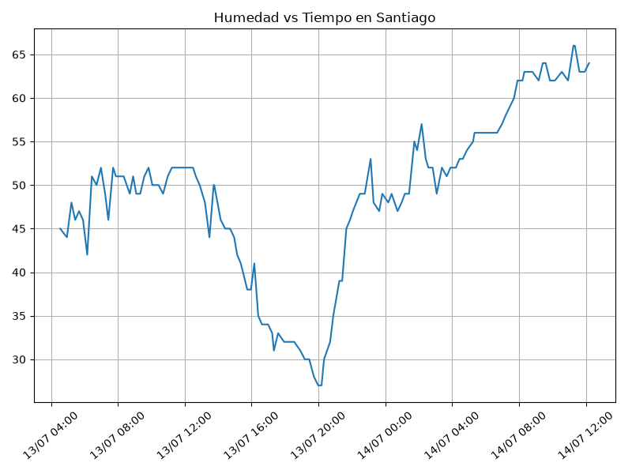
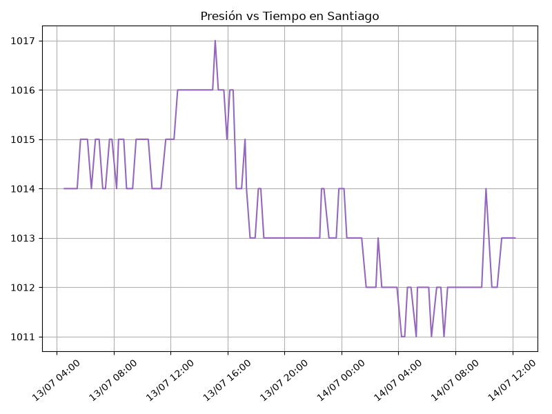
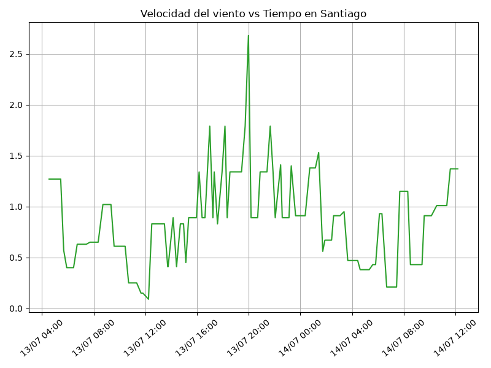

G1- Proyecto Final (ICCD332) Arquitectura de Computadores
Índice
- 1. City Weather APP - Registro Climatológico de Santiago (Chile)
- 2. Presentación de resultados
- 3. Instrucciones Java Script
- 4. Referencias
1. City Weather APP - Registro Climatológico de Santiago (Chile)
1.1. Descripción del Proyecto
El objetivo del proyecto consiste en desarrollar un sistema capaz de consultar periódicamente el API de OpenWeatherMap para obtener información climatológica de la ciudad de Santiago.
Los datos obtenidos son almacenados automáticamente en un archivo CSV mediante un programa desarrollado en Python. La adquisición de información se realiza cada 15 minutos utilizando Cron en Linux y posteriormente los datos son representados mediante gráficas generadas automáticamente y publicados mediante un sitio web generado con Emacs Org Mode.
1.1.1. Tecnologías utilizadas
- Python 3
- OpenWeatherMap API
- Linux / WSL
- Cron
- Emacs Org Mode
- Pandas
- Matplotlib
1.2. Estructura del proyecto
cd .. cd .. pwd
~/G1ProyectoArq/ProyectoFinal-G1-Santiago
.
├── CityTemperatureAnalysis.ipynb
├── clima-santiago-hoy.csv
├── generar_graficos.py
├── get-weather.sh
├── gptelIA.md
├── main.py
├── output.log
└── weather-site
├── build-site.el
├── build.sh
├── content
│ ├── images
│ ├── index.org
│ ├── mult-ieee754.org
│ └── robo_autopartes.org
└── public
├── images
└── index.html
6 directories, 15 files
SOLUCIÓN:
- Consulta al API de OpenWeatherMap.
- Procesamiento de la respuesta JSON.
- Escritura de los datos en el archivo CSV.
- Ejecución automática mediante get-weather.sh.
- Programación periódica utilizando Cron.
- Generación automática de gráficas.
- Publicación del sitio web mediante Emacs.
1.3. Formulación del Problema
Se realizó un registro climatológico de una ciudad \(Santiago, Chile\). Para esto, escriba un script de Python/Java que permita obtener datos climatológicos desde el API de openweathermap. El API hace uso de los valores de latitud \(-33.45694\) y longitud \(-70.64827\) de la ciudad \(Santiago\) para devolver los valores actuales cada 15 minutos.
Los resultados obtenidos de la consulta al API se escriben en un archivo clima-santiago-hoy.csv. Cada ejecución del script se almacena nuevos datos en el archivo. Se utilizó crontab para obtener datos del API de openweathermap con una periodicidad de 15 minutos mediante la ejecución de un archivo ejecutable denominado get-weather.sh. Todas las operaciones se realizaron en el WSL.
1.4. Descripción del código
El programa principal fue desarrollado en Python, donde consulta el API de OpenWeatherMap para obtener información climatológica de la ciudad de Santiago. Posteriormente, la respuesta en formato JSON es procesada, normalizada y almacenada en un archivo CSV, donde cada ejecución agrega un nuevo registro sin sobrescribir la información existente.
1.4.1. Parámetros Iniciales
El programa inicia importando las librerías necesarias para realizar la consulta al API, procesar la información obtenida y almacenarla en un archivo CSV. Además, se definen constantes que serán utilizadas durante toda la ejecución del programa.
import requests import os import csv from datetime import datetime, UTC # Variables de entorno. # Fuente: # https://docs.python.org/3/library/os.html SANTIAGO_LAT = -33.45694 SANTIAGO_LONGITUDE = -70.64827 API_KEY = os.getenv("OPENWEATHER_API_KEY") FILE_NAME = "clima-santiago-hoy.csv"
1.4.2. Lectura del API
Esta función realiza la conexión con el servicio web de OpenWeatherMap mediante una petición HTTP GET. Para ello utiliza la latitud y longitud de la ciudad de Santiago junto con la API KEY proporcionada por el usuario. La respuesta del servidor es devuelta en formato JSON para su posterior procesamiento.
def get_weather(lat, lon, api): # URL base del API url = "https://api.openweathermap.org/data/2.5/weather" # Parámetros enviados al API parametros = { "lat": lat, "lon": lon, "appid": api, "units": "metric", "lang": "es" } # Realiza la petición al servidor # Consulta HTTP utilizando Requests. # Fuente: # https://requests.readthedocs.io/en/latest/ respuesta = requests.get(url, params=parametros) # Convierte la respuesta JSON en un diccionario de Python return respuesta.json()
1.4.3. Procesamiento de los datos
La información recibida desde el API es transformada en un diccionario plano para facilitar su almacenamiento en el archivo CSV. Durante este proceso se extraen las coordenadas, variables meteorológicas, información del viento, nubosidad, datos del sistema y demás campos disponibles en la respuesta del servicio.
def process(json): normalized_dict = {} # Diccionario donde se almacenarán todos los datos en formato plano # Fecha y hora de la medición # Conversión del timestamp UNIX. # Fuente: # https://docs.python.org/3/library/datetime.html normalized_dict["fecha_hora"] = datetime.fromtimestamp( json["dt"], UTC ).strftime("%Y-%m-%d %H:%M:%S") # COORDENADAS for clave, valor in json["coord"].items(): normalized_dict["coord_" + clave] = valor # INFORMACIÓN PRINCIPAL DEL CLIMA for clave, valor in json["main"].items(): normalized_dict["main_" + clave] = valor # VIENTO for clave, valor in json["wind"].items(): normalized_dict["wind_" + clave] = valor # NUBES for clave, valor in json["clouds"].items(): normalized_dict["clouds_" + clave] = valor # INFORMACIÓN DEL SISTEMA for clave, valor in json["sys"].items(): normalized_dict["sys_" + clave] = valor # WEATHER ES UNA LISTA if len(json["weather"]) > 0: for clave, valor in json["weather"][0].items(): normalized_dict["weather_" + clave] = valor # LLUVIA (puede no existir) if "rain" in json: for clave, valor in json["rain"].items(): normalized_dict["rain_" + clave] = valor # NIEVE (puede no existir) if "snow" in json: for clave, valor in json["snow"].items(): normalized_dict["snow_" + clave] = valor # CAMPOS SIMPLES DEL JSON normalized_dict["base"] = json["base"] normalized_dict["visibility"] = json["visibility"] normalized_dict["timezone"] = json["timezone"] normalized_dict["id"] = json["id"] normalized_dict["name"] = json["name"] normalized_dict["cod"] = json["cod"] # Retorna el diccionario listo para escribirlo en el CSV return normalized_dict
1.4.4. Escritura del archivo CSV
Los datos normalizados se almacenan en un archivo CSV utilizando la librería csv de Python. Si el archivo aún no existe, se crea automáticamente junto con su encabezado. En ejecuciones posteriores únicamente se agrega una nueva fila con la información obtenida del API.
def write2csv(weather, csv_filename): # Escritura del CSV. # Fuente: # https://docs.python.org/3/library/csv.html # Verifica si el archivo ya existe existe = os.path.isfile(csv_filename) # Abre el archivo en modo agregar with open(csv_filename, "a", newline="", encoding="utf-8") as archivo: # Crea el escritor utilizando las claves del diccionario writer = csv.DictWriter( archivo, fieldnames=weather.keys() ) # Si el archivo es nuevo escribe el encabezado if not existe: writer.writeheader() # Escribe una nueva fila writer.writerow(weather)
1.4.5. Main()
Se coordina el flujo completo de ejecución: primero se consulta el API de OpenWeatherMap, luego se verifica que la respuesta sea válida, posteriormente se procesan los datos obtenidos y finalmente se almacenan en el archivo CSV. Si ocurre algún error durante la consulta, el programa informa que la ciudad no está disponible o que la API KEY es inválida.
def main(): print("===== Bienvenido a Santiago-Clima =====") santiago_weather = get_weather( lat=SANTIAGO_LAT, lon=SANTIAGO_LONGITUDE, api=API_KEY ) if santiago_weather["cod"] == 200: weather = process(santiago_weather) write2csv(weather, FILE_NAME) print("Datos guardados correctamente.") else: print("Ciudad no disponible o API KEY no válida") if __name__ == "__main__": main()
1.5. Script ejecutable sh
se desarrolló un script denominado \(get-weather.sh\). Este archivo activa el entorno de trabajo iccd332, accede al directorio del proyecto y ejecuta el programa principal en Python. Toda la salida generada durante la ejecución se almacena en el archivo \(output.log\) para facilitar la verificación del funcionamiento del sistema.
#!/bin/bash # Activar Conda source /home/emilioalbanfs/miniforge3/etc/profile.d/conda.sh eval "$(conda shell.bash hook)" conda activate iccd332 # Ir al directorio del proyecto cd "$(dirname "$0")" export OPENWEATHER_API_KEY="..." python3 main.py >> output.log 2>&1
1.6. Configuración de Crontab
Para automatizar la adquisición de datos climatológicos se utilizó el servicio Cron de Linux. Se configuró una tarea programada que ejecuta el script get-weather.sh cada quince minutos, permitiendo obtener nuevos registros de manera periódica sin intervención del usuario. De esta forma se construye automáticamente el historial climatológico almacenado en el archivo CSV.
*/15 * * * * $HOME/G1ProyectoArq/ProyectoFinal-G1-Santiago/get-weather.sh >> $HOME/G1ProyectoArq/ProyectoFinal-G1-Santiago/output.log 2>&1
2. Presentación de resultados
Para la presentación de resultados se utilizan las librerías de Python:
- matplotlib
- pandas
2.1. Resultados
En esta sección se presentan los resultados obtenidos durante la ejecución del sistema de adquisición de datos. A partir de la información almacenada en el archivo CSV se muestran ejemplos de los registros recopilados y diversas gráficas que permiten visualizar el comportamiento de las principales variables meteorológicas de la ciudad de Santiago.
2.2. Muestra De datos
Se presenta una muestra de los registros almacenados en el archivo clima-santiago-hoy.csv. Cada fila corresponde a una consulta realizada al API de OpenWeatherMap e incluye información sobre la fecha y hora de la medición, temperatura, humedad, presión atmosférica, velocidad del viento y demás variables obtenidas durante la consulta. ó Presentar una muestra de 10 valores aleatorios de los datos obtenidos.
import pandas as pd import matplotlib.pyplot as plt import matplotlib.dates as mdates # Leer el archivo CSV df = pd.read_csv("clima-santiago-hoy.csv") # Convertir la columna de fecha a datetime df["fecha_hora"] = pd.to_datetime(df["fecha_hora"]) # se imprime la estructura del dataframe en forma de filas x columnas print(df.shape)
Resultado del número de filas y columnas leídos del archivo csv
(57, 30)
table1 = df.sample(10) table = [list(table1)]+[None]+table1.values.tolist()
| dt | coordlon | coordlat | weather0id | weather0main | weather0description | weather0icon | base | maintemp | mainfeelslike | maintempmin | maintempmax | mainpressure | mainhumidity | mainsealevel | maingrndlevel | visibility | windspeed | winddeg | windgust | cloudsall | systype | sysid | syscountry | syssunrise | syssunset | timezone | id | name | cod |
|---|---|---|---|---|---|---|---|---|---|---|---|---|---|---|---|---|---|---|---|---|---|---|---|---|---|---|---|---|---|
| 2024-08-03 21:57:57 | -78.5249 | -0.2299 | 804 | Clouds | overcast clouds | 04n | stations | 8.53 | 8.53 | 8.53 | 8.53 | 1019 | 90 | 1019 | 724 | 10000 | 0.78 | 75 | 1.58 | 97 | 1 | 8555 | EC | 2024-08-03 06:17:01 | 2024-08-03 18:23:24 | -18000 | 3652462 | Quito | 200 |
| 2024-08-04 10:26:16 | -78.525 | -0.2299 | 804 | Clouds | overcast clouds | 04d | stations | 16.53 | 15.57 | 16.53 | 16.53 | 1016 | 51 | 1016 | 728 | 10000 | 1.11 | 6 | 2.1 | 90 | 1 | 8555 | EC | 2024-08-04 06:16:56 | 2024-08-04 18:23:19 | -18000 | 3652462 | Quito | 200 |
| 2024-08-04 09:15:02 | -78.5249 | -0.2299 | 804 | Clouds | overcast clouds | 04d | stations | 14.53 | 13.61 | 14.53 | 14.53 | 1018 | 60 | 1018 | 726 | 10000 | 0.73 | 90 | 1.81 | 86 | 1 | 8555 | EC | 2024-08-04 06:16:56 | 2024-08-04 18:23:19 | -18000 | 3652462 | Quito | 200 |
| 2024-08-06 10:05:50 | -78.5211 | -0.2309 | 801 | Clouds | few clouds | 02d | stations | 14.66 | 13.59 | 14.66 | 14.66 | 1017 | 54 | 1017 | 730 | 10000 | 1.01 | 25 | 1.74 | 15 | 1 | 8555 | EC | 2024-08-06 06:16:44 | 2024-08-06 18:23:07 | -18000 | 3652462 | Quito | 200 |
| 2024-08-03 02:43:26 | -78.5249 | -0.2299 | 802 | Clouds | scattered clouds | 03n | stations | 7.53 | 6.77 | 7.53 | 7.53 | 1019 | 81 | 1019 | 722 | 10000 | 1.55 | 171 | 1.97 | 44 | 1 | 8555 | EC | 2024-08-03 06:17:01 | 2024-08-03 18:23:24 | -18000 | 3652462 | Quito | 200 |
| 2024-08-04 22:50:26 | -78.5249 | -0.2299 | 802 | Clouds | scattered clouds | 03n | stations | 9.53 | 9.53 | 9.53 | 9.53 | 1020 | 93 | 1020 | 724 | 10000 | 1.18 | 117 | 1.4 | 38 | 1 | 8555 | EC | 2024-08-04 06:16:56 | 2024-08-04 18:23:19 | -18000 | 3652462 | Quito | 200 |
| 2024-08-03 12:52:29 | -78.5211 | -0.2309 | 801 | Clouds | few clouds | 02d | stations | 20.66 | 19.72 | 20.66 | 20.66 | 1012 | 36 | 1012 | 729 | 10000 | 4.05 | 341 | 5.7 | 17 | 1 | 8555 | EC | 2024-08-03 06:17:00 | 2024-08-03 18:23:23 | -18000 | 3652462 | Quito | 200 |
| 2024-08-03 10:54:26 | -78.5211 | -0.2309 | 800 | Clear | clear sky | 01d | stations | 15.66 | 14.12 | 15.66 | 15.66 | 1015 | 32 | 1015 | 730 | 10000 | 2.42 | 354 | 3.3 | 10 | 1 | 8555 | EC | 2024-08-03 06:17:00 | 2024-08-03 18:23:23 | -18000 | 3652462 | Quito | 200 |
| 2024-08-02 23:51:42 | -78.5211 | -0.2309 | 803 | Clouds | broken clouds | 04n | stations | 8.66 | 8.66 | 8.66 | 8.66 | 1020 | 88 | 1020 | 726 | 8882 | 1.17 | 146 | 1.32 | 68 | 1 | 8555 | EC | 2024-08-02 06:17:04 | 2024-08-02 18:23:27 | -18000 | 3652462 | Quito | 200 |
| 2024-08-03 02:13:58 | -78.5249 | -0.2299 | 802 | Clouds | scattered clouds | 03n | stations | 7.53 | 6.77 | 7.53 | 7.53 | 1019 | 85 | 1019 | 722 | 10000 | 1.55 | 160 | 1.87 | 26 | 1 | 8555 | EC | 2024-08-03 06:17:01 | 2024-08-03 18:23:24 | -18000 | 3652462 | Quito | 200 |
2.3. Gráfica Temperatura vs Tiempo
La siguiente gráfica muestra la evolución de la temperatura registrada en Santiago a lo largo del período de adquisición de datos. Cada punto representa una consulta realizada automáticamente mediante Cron.
El siguiente cógido permite hacer la gráfica de la temperatura vs tiempo para Org 9.7+.
import matplotlib.pyplot as plt import matplotlib.dates as mdates # Crear la figura fig = plt.figure(figsize=(8,6)) # TEMPERATURA VS TIEMPO plt.plot(df["fecha_hora"], df["main_temp"]) # Ajuste de las fechas plt.gca().xaxis.set_major_locator(mdates.AutoDateLocator()) plt.gca().xaxis.set_major_formatter(mdates.DateFormatter("%d/%m %H:%M")) # Cuadrícula plt.grid() # Título plt.title(f"Temperatura vs Tiempo en {next(iter(set(df['name'])))}") # Rotar etiquetas plt.xticks(rotation=40) # Ajustar márgenes fig.tight_layout() # Guardar imagen fname = "./weather-site/content/images/temperatura.png" plt.savefig(fname)

Figura 1: Gráfica Temperatura vs Tiempo
2.4. Gráfica Humedad vs Tiempo
# HUMEDAD VS TIEMPO plt.plot(df["fecha_hora"], df["main_humidity"]) plt.title(f"Humedad vs Tiempo en {next(iter(set(df['name'])))}") fname = "./weather-site/content/images/humedad.png"

Figura 2: Gráfica Humedad vs Tiempo
2.5. Gráfica Presión vs Tiempo
# PRESION VS TIEMPO plt.plot(df["fecha_hora"], df["main_pressure"]) plt.title(f"Presión vs Tiempo en {next(iter(set(df['name'])))}") fname = "./weather-site/content/images/presion.png"

Figura 3: Gráfica Presión vs Tiempo
2.6. Gráfica Velocidad del Viento vs Tiempo
# VELOCIDAD DEL VIENTO VS TIEMPO plt.plot(df["fecha_hora"], df["wind_speed"]) plt.title(f"Velocidad del viento vs Tiempo en {next(iter(set(df['name'])))}") fname = "./weather-site/content/images/viento.png"

Figura 4: Gráfica Velocidad del viento vs Tiempo
Debido a que el archivo index.org se abre dentro de la carpeta
content, y en cambio el servidor http de emacs se ejecuta desde la
carpeta public es necesario copiar el archivo a la ubicación
equivalente en /public/images
cp -rfv ./images/* /home/emilioalbanfs/G1ProyectoArq/ProyectoFinal-G1-Santiago/weather-site/public/images
3. Instrucciones Java Script
En la siguiente página se indica cómo integrar javascript como un
alternativa para testear el código.
JavaScript
4. Referencias
4.1. OpenWeatherMap
4.2. Python
4.3. Pandas
4.4. Matplotlib
4.5. Emacs
4.6. HTTPD
- Simple-Httpd
- [[https://www.youtube.com/watch?v=AfkrzFodoNw][Vídeo Youtube Build Your Website with Org Mode]